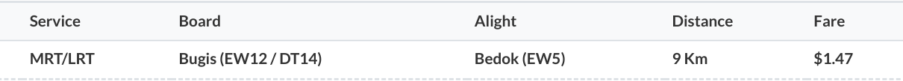
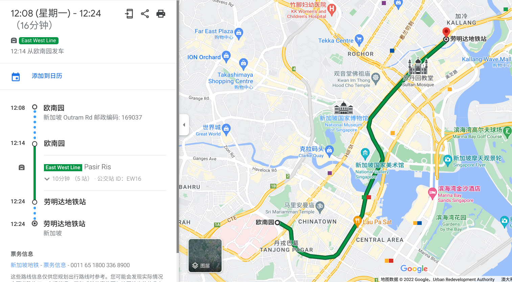
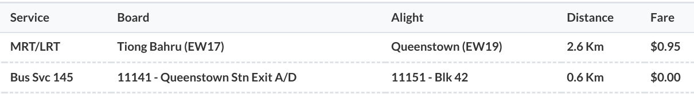
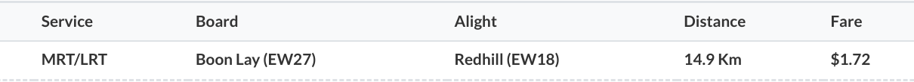
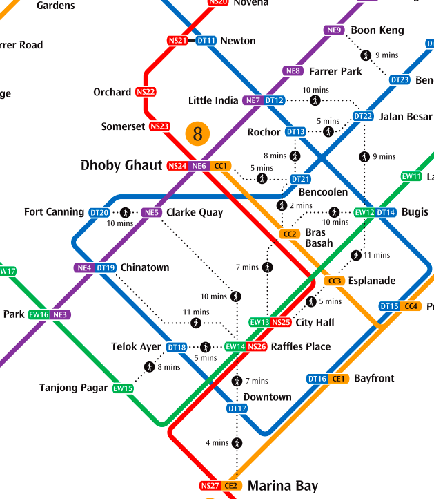

注：本文作於 2022 年 5 月 9 日，文中所述信息未來可能發生變化，可由文末參考資料獲取最新信息。
基本規則：
轉乘規則：
例 1：由武吉士前往勿洛，巴士與 MRT 價格相同
由於車資只與里程相關，所以乘搭同樣的里程，巴士與 MRT 價格相同。例如，由武吉士前往勿洛，乘搭巴士為 9.1 千米，處於 8.3-9.2 千米區間，所以車資為 1.47 元：

乘搭 MRT 為 9 千米，亦處於 8.3-9.2 千米區間，車資亦為 1.47 元：


雖然巴士與 MRT 價格相同，但用時卻大不相同。如果乘搭 MRT，全程僅需 14 分鐘，而巴士則需要 30 分鐘。但乘搭巴士亦有優點，例如巴士的座位較為舒適。
另外，有時巴士或 MRT 的路綫稍有曲折，導致兩者里程不同，從而導致價格不同，見以下兩個例子。
例 2：分別乘搭巴士與 MRT 由港灣前往克拉碼頭
由港灣前往克拉碼頭，由於巴士路綫稍有曲折，里程為 4.7 千米，處於 4.3-5.2 千米區間，所以車資為 1.15 元：


而如果乘搭 MRT，里程為 4 千米，處於 3.3-4.2 千米區間，車資為 1.05 元：


例 3：分別乘搭巴士與 MRT 由歐南園前往勞明達
由歐南園前往勞明達，如果乘搭巴士，里程為 4.1 千米，處於 3.3-4.2 千米區間，車資為 1.05 元：


而由於 MRT 路綫稍有曲折，里程為 5.3 千米，處於 5.3-6.2 千米區間，所以車資為 1.25 元：


例 4：乘搭 MRT 由中峇魯前往女皇鎮，然後轉乘巴士前往 Blk 42
乘搭 MRT 由中峇魯前往女皇鎮，里程為 2.6 千米，處於 0-3.2 千米區間，車資為 0.95 元；由女皇鎮前往 Blk 42，里程為 0.6 千米，合計里程為 3.2 千米，沒有超出 0-3.2 千米區間，所以不收取車資。


如果第二程超出區間，就需要支付車資，但由於是轉乘，需要支付的車資亦非常少，見下一個例子。
例 5：乘搭 MRT 由歐南園前往女皇鎮，然後轉乘巴士前往 Blk 42
乘搭 MRT 由歐南園前往女皇鎮，里程為 4.1 千米，處於 3.3-4.2 千米區間，車資為 1.05 元；由女皇鎮前往 Blk 42，里程為 0.6 千米，合計里程為 4.7 千米，處於 4.3-5.2 千米區間，超出 0-3.2 千米區間，所以支付超出的車資 0.10 元。


例 6：乘搭 MRT 由紅山前往文禮，再返回
乘搭 MRT 由紅山前往文禮，里程為 14.9 千米，處於 14.3-15.2 千米區間，車資為 1.72 元。返程如果乘搭 MRT 由文禮返回紅山，不符合「不可出閘後由同一地鐵站入閘」的轉乘條件，所以不視為轉乘，車資為 1.72 元，合計 3.44 元：



而如果返程先乘搭巴士由文禮前往湖畔，再乘搭 MRT 由湖畔前往紅山，則符合轉乘條件，車資合計 2.11 元：

其他
針對「不可轉乘同一班巴士」的規則，可以先乘搭一站其他綫路的巴士，再轉乘原來的巴士。
針對「地鐵站之間轉乘必須在 15 分鐘以內」的規則，可以先乘搭一站巴士，這樣就有 45 分鐘的轉乘時間。
有時兩個地鐵站距離較近，但乘搭地鐵很遠（如 DT13 梧槽到 DT22 惹蘭勿剎、DT21 明古連到 CC2 百勝），這時可以利用「地鐵站之間轉乘必須在 15 分鐘以內」的規則，出閘後步行至另一地鐵站入閘。地鐵站間 15 分鐘步行圖如下：

| 距離（千米） | 票價 |
|---|---|
| 0-3.2 | 0.95 |
| 3.3-4.2 | 1.05 |
| 4.3-5.2 | 1.15 |
| 5.3-6.2 | 1.25 |
| 6.3-7.2 | 1.34 |
| 7.3-8.2 | 1.41 |
| 8.3-9.2 | 1.47 |
| 9.3-10.2 | 1.51 |
| 10.3-11.2 | 1.55 |
| 11.3-12.2 | 1.59 |
| 12.3-13.2 | 1.63 |
| 13.3-14.2 | 1.67 |
| 14.3-15.2 | 1.72 |
| 15.3-16.2 | 1.76 |
| 16.3-17.2 | 1.80 |
| 17.3-18.2 | 1.84 |
| 18.3-19.2 | 1.88 |
| 19.3-20.2 | 1.91 |
| 20.3-21.2 | 1.94 |
| 21.3-22.2 | 1.97 |
| 22.3-23.2 | 2.00 |
| 23.3-24.2 | 2.02 |
| 24.3-25.2 | 2.04 |
| 25.3-26.2 | 2.06 |
| 26.3-27.2 | 2.07 |
| 27.3-28.2 | 2.08 |
| 28.3-29.2 | 2.09 |
| 29.3-30.2 | 2.10 |
| 30.3-31.2 | 2.11 |
| 31.3-32.2 | 2.12 |
| 32.3-33.2 | 2.13 |
| 33.3-34.2 | 2.14 |
| 34.3-35.2 | 2.15 |
| 35.3-36.2 | 2.16 |
| 36.3-37.2 | 2.17 |
| 37.3-38.2 | 2.18 |
| 38.3-39.2 | 2.19 |
| 39.3-40.2 | 2.20 |
| 40.3- | 2.21 |
（2022 年 5 月 9 日）